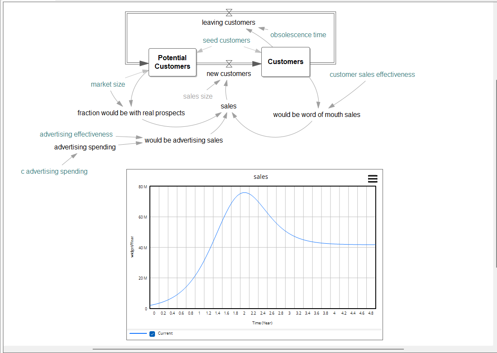

Systems Thinking Platform
「システム思考」をベースとした
「システム思考」をベースとした
共通認識・評価プラットフォームを提供します。
複雑化・非線形化する地政学リスク・気候変動・技術変化（AI・BioTech・Robotics等）や人口動態の変化に対し、社会・政府・企業が適切に対応し続けられる世界の実現に貢献します。
見えている問題の下には、まだ言葉になっていない構造がある。
Visible / Hidden
Use Case Summary
SCM ボトルネック・リスクシミュレーション
地政学リスク等で多段階サプライチェーンのどこがボトルネックになりそうか感度分析によりリスクを分析し、見通しや対策箇所を特定します。
オペレーション ボトルネック・リスクシミュレーション
コロナ化の医療のような広域なオペレーションのどこがボトルネックになりそうか感度分析によりリスクを分析し、見通しや対策箇所を特定します。
シナリオプランニング実行連動
複数のシナリオで前提が変化し続けるとき、今の実績データが複数シナリオのどれに近づいているか継続的に判定し、シナリオに対応する業務ルール・システムに切り替えます。
効果・リスク評価指標 共同投資
単独の企業では抱えきれない広範な課題で、複数の当事者でリスクを共同引受・共同積立するか定量的に合意するためにソーシャルインパクトなどの指標を定義し、その遷移を評価します。
システム思考モデリングの民主化
複数の関係者の頭の中にある要素間の関係を、手書き図や発言から生成AIを活用しモデルのドラフトを作成します。また生成AIを活用し要素間の関係のチェックや関係定義のデータ・関係式、当該領域の専門家などの情報提示をして対話的にモデルを改善します。
Service
Platform
システム思考プラットフォーム
Vensim®ベースのシミュレーションで、モデル化からシナリオ評価・アクション連携までを一貫して支援します。
Vensim®によるモデリング図
- ①システム思考モデリング アクセラレーター
- ②ボトルネック・リスクシミュレーション
- ③シナリオ シミュレーション・適合度評価
Professional Service
プロフェッショナルサービス
システム全体の定量評価に基づく意思決定・リスク管理と、プラットフォームの機能拡張を支援します。
- ①システム思考 モデリング支援
- ②リスク・シナリオ分析支援
- ③生成AI連携 インテグレーション支援
Training/Seminar
トレーニング／セミナー
「システム思考」の考え方と実践手法を、組織内に定着させる研修を行います。
- ①システム思考 モデリング トレーニング
最新情報
現在準備中です。会社設立・サービス開始に関する情報は、こちらに順次掲載します。